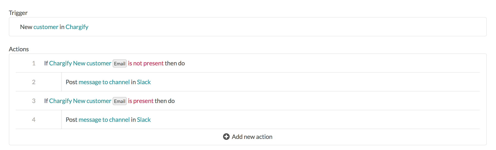
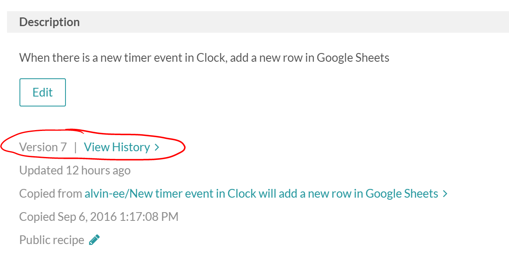
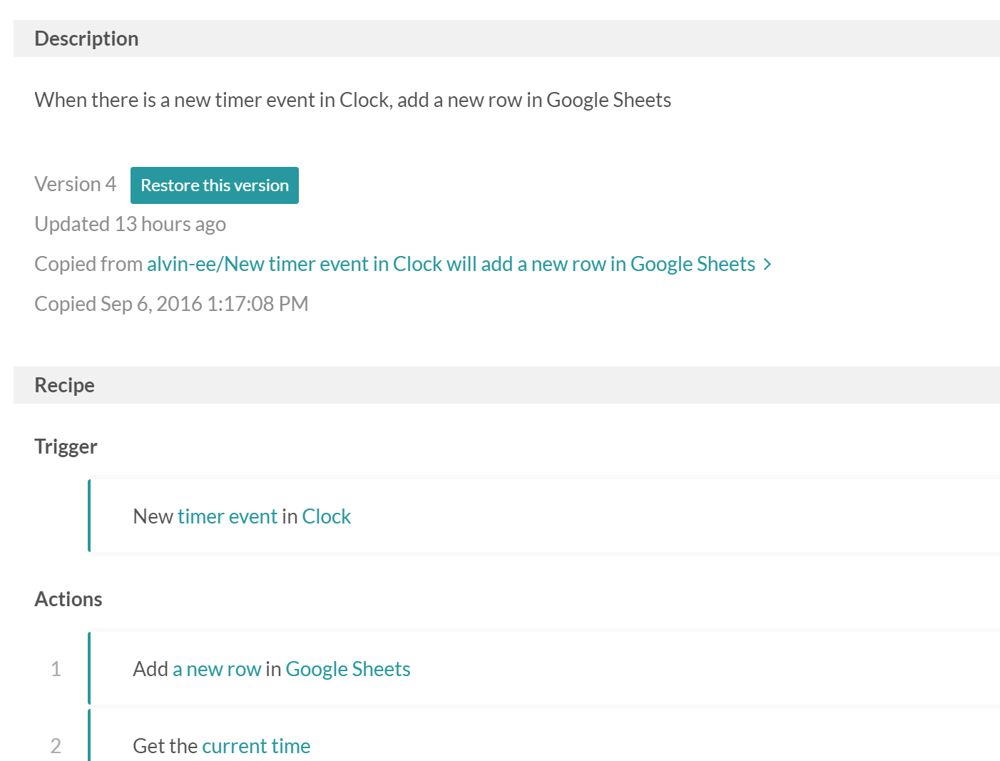
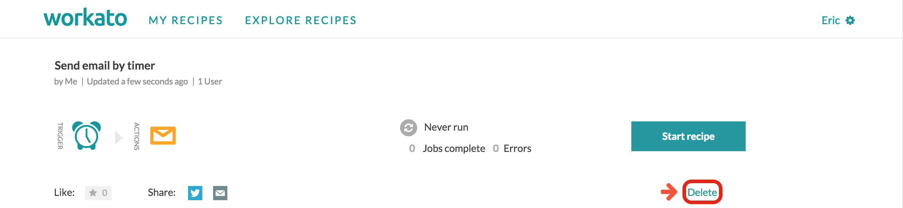

Recipe Building Best Practices
This section contains additional tips and highlights of best practices for recipe building,
Building your recipe iteratively
When attempting to build a rather complicated recipe, we recommend building it iteratively, or go by phases Here are 7 tips to follow in sequence:
1. Make sure your trigger works as expected
Things to check when using a trigger :
- Should you be using trigger filters?
- Is the Since parameter correct?
Should it be based on created/updated, or just created?
I start the recipe with nothing but the trigger followed by a clock action. The clock action is just a dummy action. When I test this recipe, it will get a current time. This way, I can check whether the tested output is the desired result that I wish. I am able to do all this without updating records in any of my connected apps.

2. Check your conditional actions
You can now add a few more steps to make sure which condition would be the best choice, I use clock, email, or Slack in place of the real actions to capture the data mappings that will eventually be there..The reason for adding these notification steps here is that conditional steps do not show up in the log, hence we need to add different actions for different conditions to know if the conditions are correct.
 Best if you have both sides to know which is the better course to take.
3. Pay Attention to indentation
Make sure that your actions are all nested correctly. For Conditional actions and repeated actions, actions that you want to be processed under those criteria have to be nested under the first action. If an action is supposed to be activated under a certain condition, make sure that it is nested under the same scope. If it isn't, it will be processed regardless of the condition.
 This is wrong because Step 2 is not indented. Note how Step 4 is on a different level from the rest. Step 4 is indented under Step 3.
This is wrong because Step 2 is not indented. Note how Step 4 is on a different level from the rest. Step 4 is indented under Step 3.
4. Cloning and Version Control
I use cloning and modifying to create the next version of the recipe. Cloning recipe allows me to push changes to the original recipe whenever I want to. This allows you to create a "test" and "production" recipes. The cloned recipe will be a production recipe, and you can make changes on the original/test recipe.

When you edit the original recipe, the cloned recipe will show that changes are available to be pushed.

Simply click on install to copy the changes from test recipe to production recipe
Once you are satisfied with the changes, going to the cloned recipe, you should be able to see a note that a new version is available. This allows you to push any changes made on the test recipe to the production recipe.
Version Control Guide
If you have made any unwanted changes to your recipe and want to revert back to a previous version, just follow this guide!
First, got to the recipe page and look under the Description tab. Under the tab, you should see the current version of the recipe, with the View History link next to it.

Click on the View History page, and you should see something like this

Click on a version that you would like to revert to or just take a look at, and you see a page with the details of that version of the recipe. 
Once you are satisfied that this is the version that you want to revert to, click on the button and voila! You have reverted your recipe to a previous version!
5. Cleaning up
I keep iteratively building up the recipe, until I get to my perfect recipe. After I am done, I go and cleanup all the temporary recipes I had built that I don't need any more. To delete, you click on the Delete Button underneath the 'Start Recipe' Button. 
6. Try out the new recipe.
At this point will connect to the production system by changing the App connection to point to the production app. I will try out the recipe by changing the since parameter to a very short interval, and add a new record and test it out. I may do this step iteratively too, by updating the test system first and then change the connections to make the updates to the production system.
The final step is to make a copy of the recipe and change the since parameter to the right interval. You will need to make a copy of the recipe as changing the since parameter to an earlier time does not trigger the recipe to go back before the latest trigger than was made. You may also need to change the connections to your production systems.
Click on start to start the recipe. You are done. If there are any errors you will be notified by email.
7. Monitor
If you want to you can monitor the recipe periodically to see if there are any errors that you had not taken care of. You can do this on the 'My recipes page' that shows the active recipes and the failed and successful job counts.
Naming Your Recipes
When we are in a rush to get our recipe up and running it seems like a chore to pay attention to the name or description for the recipe, but giving it a proper name and describing it properly goes a long way when you have many recipes. Different people have different styles, and we will mention some that we follow
Naming
Using the name of the main apps in the recipe name. I used to name them as [SFDC+QBO] New account in Salesforce... I still use this sometime so I can quickly spot them or sort them when I am dealing with them outside the system. I keep a separate log of my recipes in a spreadsheet for my own cataloging purposes and naming it this way sometimes helps
Some people put in their name in front or some other prefix like [RD] New customer from Salesforce.... or [Prod] New customer from Salesforce etc.
To use the 'New recipe' prefix or not. Some people use the New recipe prefix while they are building the recipe, and when they have a successful recipe, change that to the intended name and delete the trial ones. They can easily track and delete the trial ones because of the 'New recipe' pre-fix.
Clones
- If you clone a recipe from some other user, your recipe gets the same name as the original. Keep in mind that when the original changes you don't get notified or updated.
Copies
When you copy your own recipe, you will get a name that starts with 'Copy of' .... This is to avoid having duplicate names, however it does not really matter to the system because the unique identifier for a recipe is the recipe number. You can see the recipe number in the recipe link. For example, the recipe number for the recipe displayed below is 13582. You can always get to a recipe by keying in the address as www.workato.com/recipes/[recipe number here]. This works for all public recipes, but not for private recipes.
 *The URL to search for this recipe would be: www.workato.com/recipes/13582
*The URL to search for this recipe would be: www.workato.com/recipes/13582
Adding Descriptions and Comments on your Recipes
Recipe Descriptions
We like recipe builders to describe their recipes well. This is because we built Workato as a community for building and sharing recipes and we want to make the recipes easy for sharing. When someone else is looking at your recipe, they will see the definition on top and decide if they want to look further down or not.
Comments
We also recommend adding comments to your recipe steps, especially if the steps are not obvious. To attach comments, you click on the comment button, that is the first button on the right hand set of buttons/icons. If you click on it, a Comment window opens up underneath.
To learn how to add comments and descriptions to your recipes, watch this video.